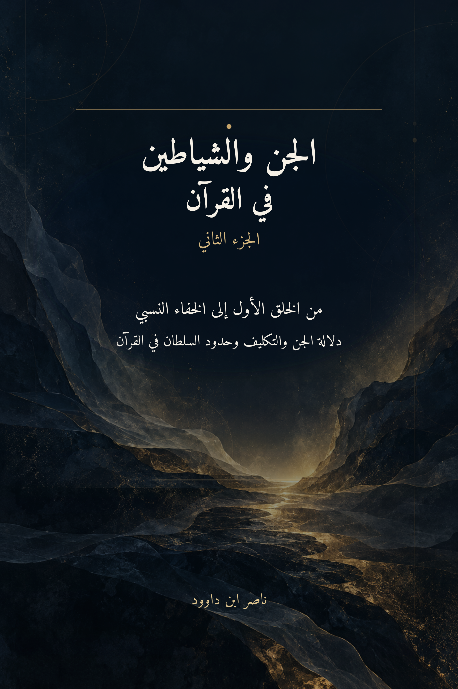

126. الجن والشياطين في القرآن — الجزء الثاني

دراسة لدلالة الجن والتكليف وحدود السلطان، من الخلق الأول إلى الخفاء النسبي، تختبر الفرضيات بالموارد المقابلة وتفصل استنباط المؤلف عن النص القرآني.
النسخة الإنجليزية تكييف مفاهيمي مختصر وليست ترجمة حرفية كاملة؛ يبقى النص العربي المرجع الأساسي.
قراءة PDF داخل الموقع / Read the PDF on this website
جارٍ تجهيز القارئ… / Preparing the reader…
ملخص الكتاب وفهرسه الموضوعي (مقتطف نصي للفهرسة والبحث)
الجن والشياطين في القرآن — الجزء الثاني
من الخلق الأول إلى الخفاء النسبي: دلالة الجن والتكليف وحدود السلطان في القرآن
ناصر ابن داوود
https://nasserhabitat.github.io/nasser-books-v2/manifesto.html
1 الفهرس
الجن والشياطين في القرآن — الجزء الثاني 2
من الخلق الأول إلى الخفاء النسبي: دلالة الجن والتكليف وحدود السلطان في القرآن 2
1 الفهرس 3
2 ملخص الكتاب 10
3 دليل القراءة والاختبار في هذا الجزء 10
4 المخطط 2 — بروتوكول القراءة والاختبار (QCROS): كيف يتحرك البحث من النص إلى الحكم العلمي؟ 12
5 مقدمة الجزء الثاني: من تحرير الوعي إلى استكشاف التاريخ القرآني والوعي الكوني 14
6 المخطط 1 — خريطة الفرضيات الكبرى في الكتاب: ما حقيقة الجن في الخطاب القرآني؟ 16
7 الفهرس 17
8 الفصل الأول: الجذر اللساني (ج-ن-ن) بين الصفة الوظيفية ووهم "الكائن الهلامي" 23
8.1.1 إثراء منهجي — الوصف الحالاتي والخفاء النسبي 24
8.2 آية العصا: هل "الجانّ" صفة أم كائن مستقل؟ 24
8.2.1 تحرير المدونة قبل التأويل 24
8.2.2 ثلاثة أوصاف للحدث: حية، وجانّ، وثعبان 25
8.2.3 إثراء من «محرك البحث المتخصص — عصا»: المادة والرسالة 25
8.2.4 من «الجانّ» المشبَّه به إلى «الجانّ» المخلوق: اختبار الاشتراك 26
8.2.5 التحليل بالمثاني الحرفية: أداة اكتشاف لا برهان ذاتي 26
8.2.6 الاختبارات العكسية والحالة العلمية 26
8.3 "الجن" كصفة وظيفية واجتماعية في اللسان العربي والقرآني 27
8.3.1 التمييز بين المسمّى والحالة الأخلاقية 28
8.4 الخلاصة: تحرير المفهوم من الأسطورة 28
9 الفصل الثاني: اختبار فرضية وحدة الفصيل وتمايز الطبائع (إنسان الأُلفة وجانّ الاحتدام) 29
9.1 مدخل بنيوي: من اختلاف تصورات الماهية إلى اختبار وحدة الفصيل 29
9.2 تفكيك ثنائية الطين والنار: الخلق الأول واحتمالات الطبع الوظيفي 30
9.3 وحدة الإدراك والتكليف (إنسان الأُلفة وجانّ الاحتدام) 31
9.3.1 أربع قرائن متقاطعة لاختبار فرضية وحدة الفصيل البشري (H2) 31
9.3.2 ميزان الحرف والماهية — قراءة محكومة لا عدالة غيبية 32
10 الفصل الثالث: سرّ ﴿مِن قَبْلُ﴾ وأنطولوجيا الوجود قبل المرحلة الآدمية 33
10.1 مدخل زمني: من الأفق الاجتماعي إلى العمق التاريخي السحيق 33
10.2 تفكيك دلالة ﴿مِن قَبْلُ﴾ في هندسة النظم القرآنية 33
10.3 آدم بين "بداية الجنس البيولوجي" و"بداية مرحلة الاصطفاء الواعي" 34
10.3.1 المارج والسموم والنار — فصل الأوصاف عن الهوية 34
11 الفصل الرابع: الآيات المقاومة — الرؤية والذرية والتسخير واستراق السمع 35
11.1 من اختبار الخصائص المنصوص عليها إلى حدود فرضيات الهوية 35